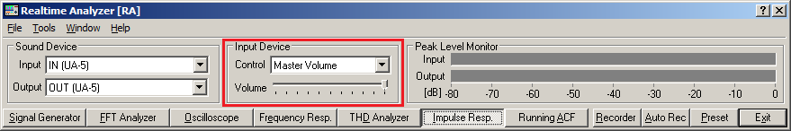
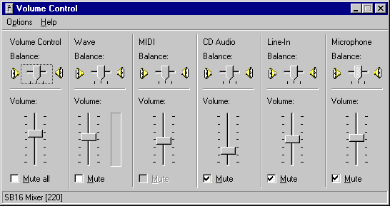

DSSF3 > RA > Impulse response > Measurement guide
Input device setting and volume control
First, select the input device (line, microphone, etc) and sound device (soundcard) in the main window of RA. This selection is interlocked with Windows' recording control. Usually, line-in or microphone is used.

Next, output device has to be set as follows. Open the Windows Volume Control and check Mute except for Wave. Otherwise, input signal from the microphone or the line-in is outputted directly and the howling might occur. Also, do not use the advanced controls, especially the tone controls. If there are excessive sound effects, it cannot be measured correctly. Enlarge the volume as much as possible in the range which is not distorted. Distortion is fatal in a measurement system.

If you still have problems, it is difficult to perform the impulse response measurement by your PC. Please contact us. Perhaps we can give you suggestions depending on your situation.
DSSF3 > RA > Impulse response > Measurement guide